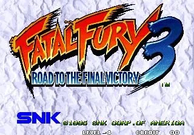

Neo Geo · Nº 30
Fatal Fury 3 - Road to the Final Victory
- Año: 1995
- Desarrollador: SNK
- Género: Lucha / Uno contra uno
- Jugadores: 2 jugadores
Durante un viaje a Southtown para asistir a la inauguración de un nuevo local del Pao Pao Cafe del antiguo luchador callejero Richard Meyer, los lobos solitarios (Terry Bogard, Andy Bogard, Joe Higashi y Mai Shiranui) se ven atrapados sin quererlo en medio de una búsqueda desesperada de los Pergaminos Shiranui y de los misteriosos luchadores que van tras ellos. El juego tiene un estilo gráfico nuevo, 2 planos de fondo para luchar, un sistema de notas que muestra lo bien que lo haces en combate, muchos movimientos y combos ocultos, y varios finales según tu actuación. Las respuestas solo se descubrirán tras una batalla larga y feroz. ¿Estás a la altura?
Controles
que A + B y B + C cambien de plano (aquí hay tres).
Lucha: A y B abajo, C y D arriba.
| Panel | Juego |
|---|---|
 | A · Dar un puñetazo flojo |
 | B · Dar una patada floja |
 | C · Dar un puñetazo fuerte |
 | D · Dar una patada fuerte |
| + | A + B · Pasar al plano de delante |
| + | B + C · Pasar al plano del fondo |
  | Empezar |
 | Meter una moneda |
+  | Salir del juego |
El panel en Neo Geo

Argumento
Recopilado de internet (2026-11-02). Lo marcado con ⚠️ no está probado en la bartop.
Dos años después de vencer a Wolfgang Krauser, Terry Bogard vuelve a South Town para la inauguración del Pao Pao Cafe 2, con Andy, Joe y Mai.
Allí, Joe le cuenta un rumor: Geese Howard sigue vivo. Sobrevivió a la caída de su torre, fingió su muerte y prepara su venganza. Al investigarlo, los amigos se meten en algo mayor: un peligroso criminal japonés, dos jóvenes huérfanos chinos y tres pergaminos sagrados que pueden poner en peligro el mundo.
Final: hay finales buenos y malos; para el bueno hay que llegar al jefe final verdadero (en el vídeo, la segunda partida).
Fuentes
Jugabilidad
Recopilado de internet (2026-11-02). Lo marcado con ⚠️ no está probado en la bartop.
- Tipo de juego: lucha 1 contra 1 de SNK (1995).
- Tres planos: el luchador está en el del medio y puede pasar al de delante (A + B) o al del fondo (B + C) para esquivar.
- Agarres: pegado al rival, con dirección y C o D.
- Supermovimientos ocultos: hay un movimiento desesperado oculto por personaje (ver «Trucos y secretos»).
- Estructura: ver «Guía de niveles».
Fuentes
Guía de niveles
Recopilado de internet (2026-11-02). Lo marcado con ⚠️ no está probado en la bartop.
| Fase | Escenario |
|---|---|
| 1-4 | Pao Pao Cafe 2 · aeropuerto de South Town · Pioneer Plaza · National Park |
| 5-8 | East Side Park · Howard Arena · Port Town · Dream Amusement Park |
| 9-12 | Sound Beach · Geese Tower · South Station · Delta Park |
- El orden de las primeras fases cambia según el luchador.
- Hay un final malo y finales buenos; el vídeo muestra los dos caminos.
Fuentes
Objetos
Recopilado de internet (2026-11-02). Lo marcado con ⚠️ no está probado en la bartop.
No hay objetos.
Fuentes
Trucos y secretos
Recopilado de internet (2026-11-02). Lo marcado con ⚠️ no está probado en la bartop.
Secretos
- Supermovimientos ocultos: cada luchador tiene uno que no sale en las instrucciones. ⚠️ Los comandos están en StrategyWiki.
Fuentes
Longplay

Partida completa de la recreativa (55 min), de LongplayArchive: Longplay of Fatal Fury 3: Road to the Final Victory.
Pulsa el minuto de un nivel para ver el vídeo desde ese punto.
Niveles
| Partida | Fases |
|---|---|
| Primera partida | |
| Segunda partida | |
| Final |